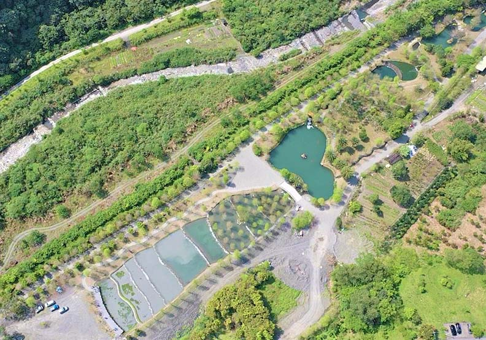

文獻資料
碳排放
碳排放是指人類因為從事某件活動，直接或間接產生的溫室氣體，這些溫室氣體的總重量就被稱為碳排放量。 其中以二氧化碳在大氣中的佔比最多，所以二氧化碳的重量是最常見的碳排放衡量標準。
目前所造成的現象有：溫室氣體增加、全球暖化的速度加快、全球平均溫度升高、海平面升高、極端氣候加劇

環境的現象
觀光局從暑假期間推出旅遊補助，民眾出遊的意願提高，參加活動也更為踴躍，因這個原因國旅市場突然湧進比往年更多出幾倍的消費人口。造成了環境變得髒亂、生態上被破壞......等等現象。
| 地區 | 原因 | 報導 | 圖片 |
|---|---|---|---|
| 小琉球 | 人潮、航班爆量，短時間內大量的遊客湧入，生態環境難抗議。在破壞生態中最直接的就是人為踩踏，除了人為踐踏外野因為補助國旅的狀況湧入大量遊客，小琉球還出現水質變差的現象，因為大量遊客住宿造成當地民宿過度發展、排出污水，大量珊瑚遭到藻類覆蓋，再加上大環境的改變，讓小琉球的氣溫、水溫比較高。
還有大量的垃圾，但因可焚燒、掩埋的地方、空間不足需運送至外縣市代燒與暫放掩埋場，雖然地方政府說焚化廠有修繕計畫，但趕不上遊客來的速度，只一昧推國旅，雖然振興了經濟，但這環境傷害。 |
爆棚的離島/國旅振興了觀光 小島生態物種卻在滅跡！ |  |
| 宜蘭 | 宜蘭的大礁溪三層坪經公私協力整合，打造全國首個階梯式農塘，但遊客爆量，導致草皮被踩禿、設施遭破壞，遊客也丟下了許多垃圾在地上，讓整個環境看起來很髒亂，害的業者不得不停運進行整修。 | 宜蘭三層坪草皮全禿光！國旅秘境爆紅亂象多，政府為何管不了？ |  |
| 雲林 | 雲林虎尾的稻田捲，陽光灑落時事一片金黃色的，國內鮮少見到此場景，吸引不少民眾前往打卡拍照留念，但之後因地主遭威脅要「一把火燒光」和被檢舉虐狗......等等，內心不好受而關閉營業。 | 雲林稻草捲心酥」只開到4/7！原因竟是「被檢舉」 |
綠色旅遊
在旅行過程中對環境和當地社區造成最小的負面影響，同時支持環境保護並參與在地活動，促進地方產業創生。
綠色旅遊對環境和社區的保護非常重要，3個原因如下：
1.減少對環境的污染與破壞：
傳統的旅遊方式常常造成對環境衝擊與負擔，例如大量的能源消耗、水資源浪費、空氣和水污染、生態環境破壞等等。而環保署提倡的綠色旅遊則藉由搭乘低碳交通工具、自備盥洗用具、選擇環保旅館與環境教育景點等方法，來友善在地環境。
2.促進在地社區的發展：
選擇綠色旅遊也可以幫助地方創生、帶動青年回鄉、創造優質就業機會。綠色旅遊支持當地的文化和傳統產業，提供就業機會，促進地方經濟的發展，進而提高當地居民的收入和生活品質。
3.提供旅客深度的旅遊體驗：
旅客可以通過參加在地社區的文化活動、品嚐當地美食、體驗當地生活、感受自然風光等方式，更好地了解當地文化和環境，體驗深度的旅遊方式。如台東近年來推廣的慢食節，提倡從「產地到餐桌」體驗在地飲食與文化，並「友善土地」自備碗筷與愛護環境。

國旅經濟
2022年的國旅補助政策是台灣政府為提振國內觀光產業所採取的重要措施之一。隨著全球疫情逐漸緩和，國際旅遊仍未完全恢復，國內旅遊成為促進經濟活力的重要手段。台灣政府透過提供國旅補助，旨在刺激國內消費，增加旅遊人次，並帶動相關產業如住宿、餐飲、交通及零售等的發展。
這項政策的實施，不僅能彌補國際旅客減少所帶來的經濟損失，還能有效活絡地方經濟，特別是那些高度依賴觀光業的縣市。此外，國旅補助也促使業者提升服務質量、創新產品，以吸引更多國內旅客，進一步推動觀光產業的轉型升級。透過這些努力，政府期望能在短期內提振國內經濟，同時為長期的觀光發展奠定堅實基礎。
各行業補助

針對餐飲業紓困補貼，由經濟部提供50％補助，後續經費也增加到36.25億元，預估有5.2萬家餐飲業者受惠。

國道及公路客運振興預計投入5億元經費，46家業者受惠。
航空業者延長補貼降落費、停留費及土地房屋等費用，補助期間為今年7月至12月，預計投入經費23.64億元，受惠147家。

交通部預計花費55億元提供觀光產業補助，提供旅行業者團體旅遊、自由行旅客、觀光遊樂業等獎勵振興措施，原本規劃於9月上路，最新進度為提前於7月15日開跑，期限到12月15日。而國際機場及小三通服務業者營運補助，所需經費約10.52億元。

會展類對2022年1月-12月辦理的國際及國內展覽予以補助，預計補助198項國內外展覽，投入2.82億元經費;
機場商業服務設施業者，交通部延長補貼房屋、土地租金及權利金，所需經費約 26.7 億元，補助期間為今年7月至12月;
藝文產業則提供演藝術事業營運補助、台北國際書展補貼合計 5 億元，鼓勵民眾購書來刺激買氣。
勞工紓困振興補助方案
振興方案配合勞工紓困，勞動部針對4對象提出振興補助，包含「減班休息(無薪假)勞工、失業勞工、15-29歲青年、公法救助對象(臨時工)」，勞動部也提醒，目前紓困措施會配合延長到明年6月30日止。
（一） 無薪假勞工→安心就業計畫、充電再出發計畫
經雇主協商同意減班休息(放無薪假)的勞工，包含領月薪的全時勞工或部分工時勞工，都可向勞動部勞動力發展署申請「安心就業計畫」，按照減班休息時間給予薪資補貼差額，每月最高可補貼1萬1,000元、最長發給24個月。
「充電再出發計畫」則是補助減班休息期間參訓的勞工及提供訓練的事業單位。勞工在工作時間參加職訓課程的費用及訓練津貼，每月最高可領2萬4192元；而辦理職訓課程的單位最高可領補助350萬元，補助講師鐘點費、交通費、教材費、場地費等，同樣是轄區勞動力發展署提出申請。
(二)失業勞工→失業勞工就業獎勵金
失業勞工透過公立就業服務機構成功就業並工作滿1個月，雙方都能獲得獎助津貼。
(三)15-29歲青年→青年就業旗艦計畫、產業就業獎勵、產業新尖兵試辦計畫及學習獎勵金、應屆畢業青年尋職津貼計畫
「青年就業獎勵」過去補貼畢業後順利就業並穩定就業的青年成功，最高可領到3萬元補助。「青年就業旗艦計畫」則是補助錄取願意提供在職訓練的雇主與接受訓練的勞工本人，每位青年最高可領10萬8,000元、企業最高可補助360萬元。「產業新尖兵試辦計畫及學習獎勵金」、「應屆畢業青年尋職津貼計畫」也將繼續延長計畫辦理。
(四)公法救助對象→安心即時上工計畫、民間團體即時上工計畫
「安心即時上工計畫」、「民間團體即時上工計畫」提供短期計畫人員比照基本工資168元的工作津貼，每月補貼最高80小時工時，等同於符合對象臨時工每月可領到最高1萬3,440元的補助金，另外再依工作內容，每月補助最高2000元防疫津貼。
租金減免、紓困貸款與利息補貼、減徵賦稅
包含延長租金減免、減收權利金等，來減輕民眾和企業主的負擔，另外，也預計延長紓困貸款受理期間。
(一)租金減免
聚焦在承租國有非公用不動產、國有公用及國營事業經管不動產的個人或企業，採取減收租金或地上權權利金等，以減輕民眾負擔，並協助產業度過低潮。
(二)紓困貸款與利息補貼
延長紓困貸款、展延紓困貸款受理期間，如中小企業及非中小企業、觀光業、藝文業等，延長提供信用保證融資額度，以及協調銀行延長信用卡、其他個人貸款的債務協處機制受理期間。
(三)減徵賦稅
針對關鍵原物料實施第四波稅負減徵措施，從今年6月底延長到9月底；而桶裝瓦斯凍漲措施也從6月底延長至9月底。

認為台灣經濟有上升的例子
（正面）
以交通部&觀光部為例：

覺得台灣經濟停滯甚至下滑的例子
（反面）
以台灣網友表示為例：

結語
淺碟式的旅遊僅能帶動一時的旅遊熱潮，但長期下來無法帶動相關產業發展，與其將資源用於一次性的國旅補助，政府更需要扶持有長期效益的沉浸式體驗遊新國旅模式。
分工表
陳炘焴:經濟
林宜葶:環境
吳樺楦:簡介、國旅補助歷程、結語
梁詠淳、温云畇:旅遊政策